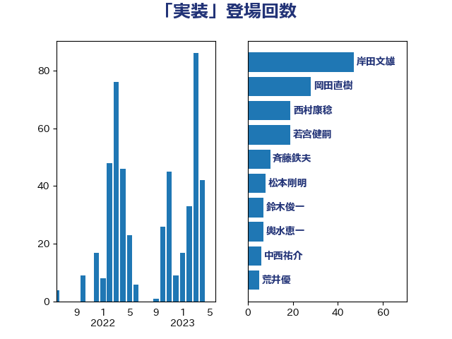

単語「実装」

| 岸田文雄 | 自由民主党 | 47 回 |
| 岡田直樹 | 自由民主党 | 28 回 |
| 西村康稔 | 自由民主党 | 19 回 |
| 若宮健嗣 | 自由民主党 | 19 回 |
| 斉藤鉄夫 | 公明党 | 10 回 |
| 松本剛明 | 自由民主党 | 8 回 |
| 鈴木俊一 | 自由民主党 | 7 回 |
| 輿水恵一 | 公明党 | 7 回 |
| 中西祐介 | 自由民主党 | 6 回 |
| 荒井優 | 立憲民主党 | 5 回 |
| 牧島かれん | 自由民主党 | 5 回 |
| 土田慎 | 自由民主党 | 5 回 |
| 勝目康 | 自由民主党 | 5 回 |
| 井坂信彦 | 立憲民主党 | 5 回 |
| 金子恭之 | 自由民主党 | 4 回 |
| 福重隆浩 | 公明党 | 4 回 |
| 永岡桂子 | 自由民主党 | 4 回 |
| 柳ヶ瀬裕文 | 日本維新の会 | 4 回 |
| 松本尚 | 自由民主党 | 4 回 |
| 山際大志郎 | 自由民主党 | 4 回 |
| 山田太郎 | 自由民主党 | 4 回 |
| 寺田稔 | 自由民主党 | 4 回 |
| 住吉寛紀 | 日本維新の会 | 4 回 |
| 中川郁子 | 自由民主党 | 4 回 |
| 三浦信祐 | 公明党 | 4 回 |
| 高木かおり | 日本維新の会 | 3 回 |
| 里見隆治 | 公明党 | 3 回 |
| 進藤金日子 | 自由民主党 | 3 回 |
| 福田昭夫 | 立憲民主党 | 3 回 |
| 田畑裕明 | 自由民主党 | 3 回 |
| 後藤茂之 | 自由民主党 | 3 回 |
| 平山佐知子 | 無所属 | 3 回 |
| 平将明 | 自由民主党 | 3 回 |
| 山口壯 | 自由民主党 | 3 回 |
| 城井崇 | 立憲民主党 | 3 回 |
| 中谷一馬 | 立憲民主党 | 3 回 |
| 高市早苗 | 自由民主党 | 2 回 |
| 馬場雄基 | 立憲民主党 | 2 回 |
| 鈴木庸介 | 立憲民主党 | 2 回 |
| 西村明宏 | 自由民主党 | 2 回 |
| 西岡秀子 | 国民民主党 | 2 回 |
| 緑川貴士 | 立憲民主党 | 2 回 |
| 神谷裕 | 立憲民主党 | 2 回 |
| 礒崎哲史 | 国民民主党 | 2 回 |
| 石井苗子 | 日本維新の会 | 2 回 |
| 田嶋要 | 立憲民主党 | 2 回 |
| 渡辺猛之 | 自由民主党 | 2 回 |
| 浅田均 | 日本維新の会 | 2 回 |
| 河野太郎 | 自由民主党 | 2 回 |
| 沢田良 | 日本維新の会 | 2 回 |
| 橋本岳 | 自由民主党 | 2 回 |
| 柳本顕 | 自由民主党 | 2 回 |
| 柘植芳文 | 自由民主党 | 2 回 |
| 末松信介 | 自由民主党 | 2 回 |
| 山岡達丸 | 立憲民主党 | 2 回 |
| 小西洋之 | 立憲民主党 | 2 回 |
| 小林鷹之 | 自由民主党 | 2 回 |
| 宮崎勝 | 公明党 | 2 回 |
| 塩川鉄也 | 日本共産党 | 2 回 |
| 塩崎彰久 | 自由民主党 | 2 回 |
| 中山展宏 | 自由民主党 | 2 回 |
| 高野光二郎 | 自由民主党 | 1 回 |
| 高橋光男 | 公明党 | 1 回 |
| 高橋はるみ | 自由民主党 | 1 回 |
| 音喜多駿 | 日本維新の会 | 1 回 |
| 青柳仁士 | 日本維新の会 | 1 回 |
| 鈴木淳司 | 自由民主党 | 1 回 |
| 野村哲郎 | 自由民主党 | 1 回 |
| 野中厚 | 自由民主党 | 1 回 |
| 遠藤良太 | 日本維新の会 | 1 回 |
| 赤池誠章 | 自由民主党 | 1 回 |
| 角田秀穂 | 公明党 | 1 回 |
| 西銘恒三郎 | 自由民主党 | 1 回 |
| 落合貴之 | 立憲民主党 | 1 回 |
| 萩生田光一 | 自由民主党 | 1 回 |
| 茂木敏充 | 自由民主党 | 1 回 |
| 船橋利実 | 自由民主党 | 1 回 |
| 舟山康江 | 国民民主党 | 1 回 |
| 秋本真利 | 自由民主党 | 1 回 |
| 田村智子 | 日本共産党 | 1 回 |
| 田名部匡代 | 立憲民主党 | 1 回 |
| 牧原秀樹 | 自由民主党 | 1 回 |
| 漆間譲司 | 日本維新の会 | 1 回 |
| 渡辺孝一 | 自由民主党 | 1 回 |
| 渡辺博道 | 自由民主党 | 1 回 |
| 浜田聡 | NHK党 | 1 回 |
| 江島潔 | 自由民主党 | 1 回 |
| 武部新 | 自由民主党 | 1 回 |
| 梶山弘志 | 自由民主党 | 1 回 |
| 梅村みずほ | 日本維新の会 | 1 回 |
| 柴田巧 | 日本維新の会 | 1 回 |
| 松野博一 | 自由民主党 | 1 回 |
| 松山政司 | 自由民主党 | 1 回 |
| 本田顕子 | 自由民主党 | 1 回 |
| 本庄知史 | 立憲民主党 | 1 回 |
| 末次精一 | 立憲民主党 | 1 回 |
| 朝日健太郎 | 自由民主党 | 1 回 |
| 平林晃 | 公明党 | 1 回 |
| 島尻安伊子 | 自由民主党 | 1 回 |
| 山本博司 | 公明党 | 1 回 |
| 山本佐知子 | 自由民主党 | 1 回 |
| 山崎誠 | 立憲民主党 | 1 回 |
| 山崎正恭 | 公明党 | 1 回 |
| 尾身朝子 | 自由民主党 | 1 回 |
| 小野泰輔 | 日本維新の会 | 1 回 |
| 小沼巧 | 立憲民主党 | 1 回 |
| 小倉將信 | 自由民主党 | 1 回 |
| 宮路拓馬 | 自由民主党 | 1 回 |
| 大塚耕平 | 国民民主党 | 1 回 |
| 堀井巌 | 自由民主党 | 1 回 |
| 国定勇人 | 自由民主党 | 1 回 |
| 嘉田由紀子 | 無所属 | 1 回 |
| 吉田久美子 | 公明党 | 1 回 |
| 古川元久 | 国民民主党 | 1 回 |
| 務台俊介 | 自由民主党 | 1 回 |
| 佐々木紀 | 自由民主党 | 1 回 |
| 今枝宗一郎 | 自由民主党 | 1 回 |
| 五十嵐清 | 自由民主党 | 1 回 |
| 中村裕之 | 自由民主党 | 1 回 |
| 世耕弘成 | 自由民主党 | 1 回 |
| こやり隆史 | 自由民主党 | 1 回 |